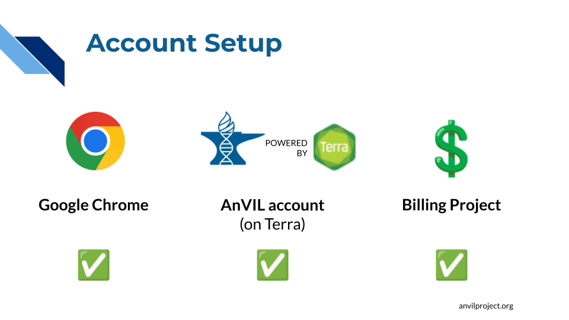

A Account Setup
Please complete these steps to sign up for AnVIL. This should take less than 15 minutes. This will allow you to follow along with the hands-on exercises.

✅ AnVIL is supported by Google Chrome. if you don’t already have it, please install Google Chrome. If you already have it installed, make sure to update Google Chrome.
✅ You must create an AnVIL account to follow the hands-on exercises. AnVIL uses a platform called Terra to manage computing environments, so you will need to register through Terra.
- Set up a Terra account - You will need a Gmail account or another email associated with a Google identity. We strongly recommend using your institutional email so you can leverage AnVIL data.
- If your institutional email is not associated with a Google identity, you can create a Google identity linked to your institutional email.
✅ You will need access to a Billing Project in order to work on AnVIL.
- If you will be attending a live AnVIL training event (such as the virtual AnVIL 101 workshop), make sure to provide your Google identity (i.e. e-mail address) when you register, or when prompted by the workshop instructor, so that they can give you access to the workshop Billing Project. The AnVIL Training team will cover the costs of workshop activities.
- If you will be working through the material on your own, you will need to set up Billing yourself or talk with the person in charge of your team’s Billing Project(s) to get access to your team’s funding. If you are setting up billing yourself, note that, as of the time of writing, Google provides free credits to new users.
If you have questions or issues registering for an AnVIL account, please post or browse help.anvilproject.org.
FAQs
- Can I use a regular gmail account (not associated with an institution)?
- A regular gmail account will be fine for workshops like AnVIL 101, but will not allow you to access most AnVIL datasets. To comply with NIH data security requirements, unaffiliated email accounts (such as gmail.com) CANNOT be given access to controlled-access data. We recommend using an institutional account if possible. See this Service Announcement from Terra for more details about CADR-compliant email addresses.
- Why do I need a Billing Project?
- AnVIL and Terra are powered by Google Cloud Platform (GCP), and AnVIL users are responsible for the costs of the underlying cloud resources that they use, such as storage space and computing power. (AnVIL and Terra do not charge any additional fees, they just pass along GCP charges.) Billing Projects are how AnVIL and GCP know who to charge. If you do not have access to a Billing Project, you cannot run computations or store files on AnVIL, and you will be unable to complete the hands-on exercises. Note that, If you are attending a live workshop, this will be handled for you - you will be given access to a Billing Project for the duration of the workshop to cover the costs of any workshop activities.